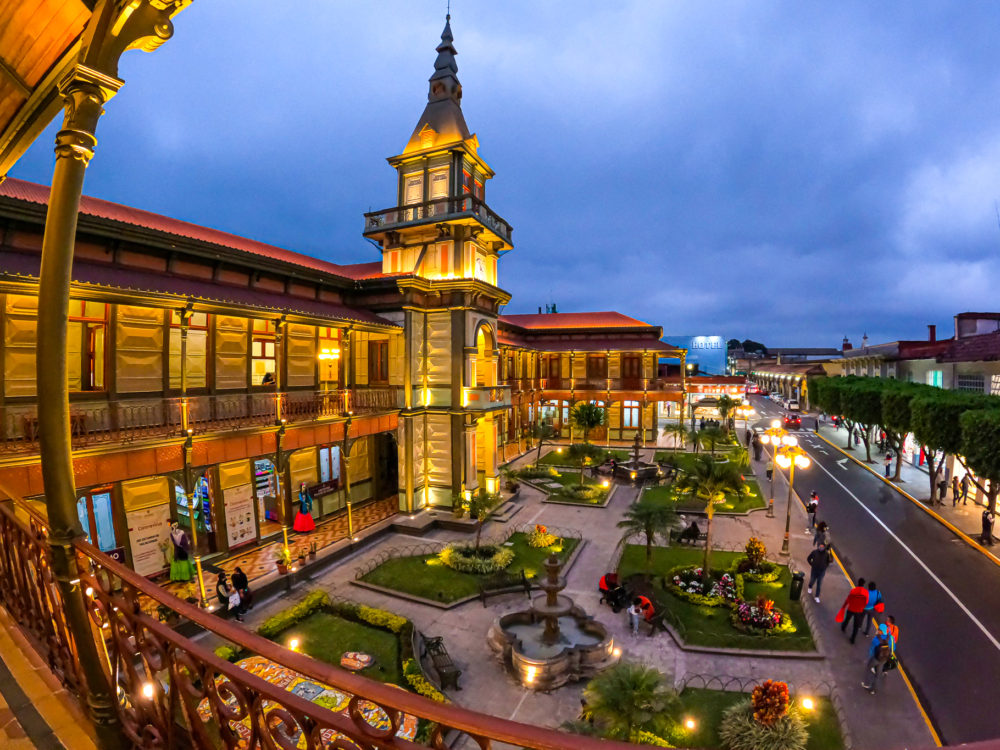
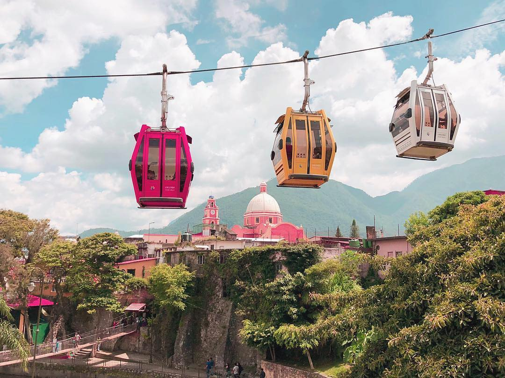
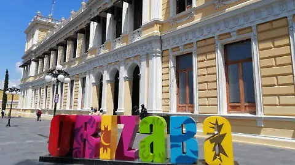

Lugares de Interés en Orizaba
| Nombre | Horario | Precio |
|---|---|---|
| Museo de Arte del Estado de Veracruz | 10:00 - 18:00 | $30 |
| Parque Nacional Pico de Orizaba | Abierto 24 hrs | Gratis |
| Palacio de Hierro | 9:00 - 19:00 | Gratis |
| Teleférico de Orizaba | 10:00 - 18:00 | $80 |
| Cascada de la Peña del Aire | Abierto 24 hrs | Gratis |
| Centro Histórico de Orizaba | Libre acceso | Gratis |


